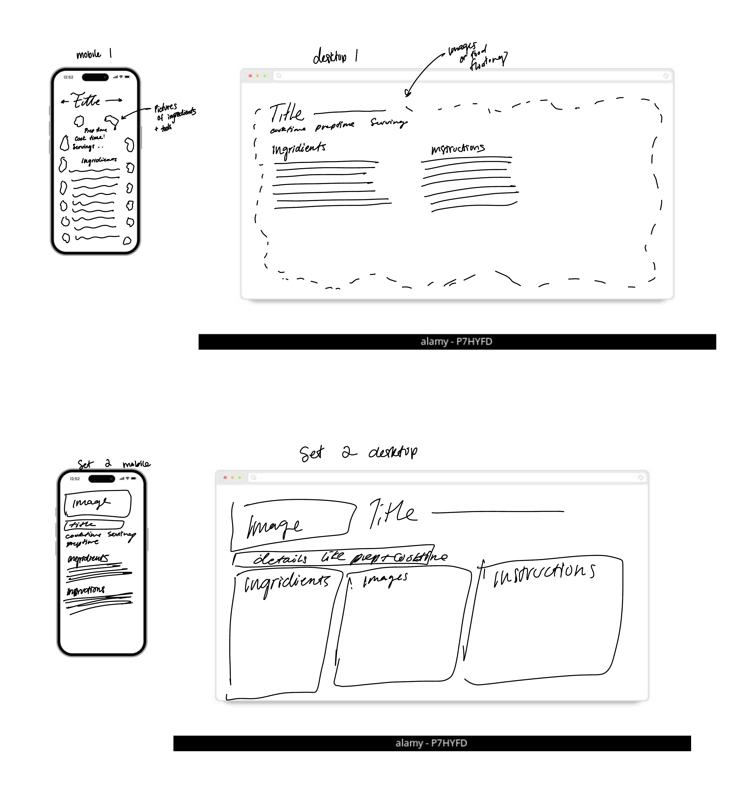

These sketches explore two different layout directions for my recipe page. Each concept includes both a portrait-oriented mobile layout and a landscape-oriented desktop layout.
Top Left: Set 1 — Mobile View
Top Right: Set 1 — Desktop View
Bottom Left: Set 2 — Mobile View
Bottom Right: Set 2 — Desktop View
